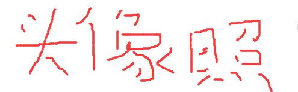
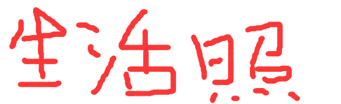

关于我


- 姓名：李足均
- 学号：201910424113
- 班级：软工二班
- 自我介绍：
大家好，我叫李足均。我从小便喜好文学，对我而言，相比理科中奇妙的符号数字和多变的几
何图形，我更喜爱文学中的那一片人文气息。无人时，我喜欢静静的看书，沉浸甚至沉醉于那一些
文学名著中。书中那片浓郁的人文气息，沁人心脾，让我不由的深陷其中，无法自拔。
不过由于过于以书为友，反而让我忽略了现实中的人际交流，在面对陌生的环境和陌生的人，我会
由于茫然不知所措而显得过于沉默乃至沉闷，这也算是我最大的一个缺点吧，所以我希望在大学里
多和同学们交流。
在此先谢谢大家了!
...
主页|
收藏
|
简历
|
FAQ